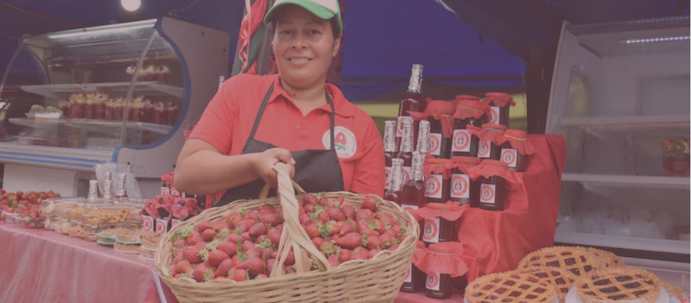

Nuestra plataforma es un espacio diseñado para conectar a emprendedores locales del Valle de Aburrá con clientes potenciales, recursos educativos, oportunidades de colaboración y voluntariado. Nuestro objetivo es fomentar el crecimiento de negocios locales, impulsar la economía circular y fortalecer la comunidad.
¿Cómo puedo registrar mi negocio en la plataforma?
Puedes registrar tu negocio fácilmente en nuestro directorio de emprendedores. Solo debes crear una cuenta y proporcionar la información básica sobre tu negocio, como nombre, categoría, productos o servicios, y ubicación. ¡Es gratis!
¿Qué recursos educativos están disponibles para los emprendedores?
La plataforma ofrece una variedad de recursos educativos, como guías sobre marketing digital, gestión de negocios, y administración de recursos. Además, ofrecemos acceso a cursos gratuitos y subsidios que ayudarán a fortalecer y hacer crecer tu negocio.
¿Puedo encontrar ayuda de voluntarios para mi negocio?
¡Sí! Nuestra plataforma cuenta con un espacio de colaboración donde puedes conectar con voluntarios dispuestos a ofrecer asesoría en áreas como redes sociales, diseño gráfico, estrategia de negocios, entre otros. Además, puedes publicar oportunidades de voluntariado para actividades de impacto social.
¿Cómo puedo apoyar a los emprendedores locales?
Puedes apoyar a los emprendedores locales de varias maneras: comprando sus productos o servicios, participando en actividades de voluntariado, o promocionando sus negocios a través de nuestras campañas de consumo local.
¿Qué es el consumo local y por qué es importante?
El consumo local se refiere a la práctica de comprar productos y servicios que provienen de negocios locales de tu comunidad. Apoyar el consumo local es crucial para fortalecer la economía de la región y mejorar la sostenibilidad de los emprendimientos, creando un ciclo económico más justo y equilibrado.
¿Qué beneficios ofrece esta plataforma para los emprendedores?
Los emprendedores pueden acceder a mayor visibilidad para sus negocios, recursos educativos, conexiones con otros emprendedores y voluntarios, y oportunidades de colaboración. Además, pueden beneficiarse de un mayor apoyo comunitario a través de campañas que promuevan el consumo local.
¿Es gratis registrarse en la plataforma?
Sí, registrarse en la plataforma y ser parte del directorio de emprendedores es completamente gratis. Queremos apoyar a los emprendedores locales sin costos adicionales.
¿Puedo colaborar con otros emprendedores?
¡Claro! Nuestra plataforma está diseñada para promover la colaboración entre emprendedores. Puedes contactar a otros negocios para compartir recursos, ideas y experiencias, o incluso organizar actividades conjuntas para impulsar proyectos comunitarios.
¿Qué tipo de oportunidades de voluntariado puedo encontrar?
En nuestra plataforma, encontrarás diversas oportunidades de voluntariado, tanto para ayudar a los emprendedores con tareas específicas (como marketing o asesoría en gestión) como para participar en eventos y actividades de impacto social en la comunidad.
¿Puedo acceder a subsidios o ayudas para mi emprendimiento?
Sí, a través de nuestra plataforma puedes acceder a subsidios, oportunidades de financiamiento y programas de mentoría. Te proporcionamos información sobre cómo aprovechar estos recursos para el crecimiento de tu negocio.
¿Cómo puedo contactar con el equipo de soporte de la plataforma?
Si necesitas ayuda o tienes preguntas adicionales, puedes ponerte en contacto con nuestro equipo de soporte a través de la sección de “Contáctanos” en el sitio web. Estaremos encantados de ayudarte.
¿Qué tipo de negocios están registrados en la plataforma?
Nuestra plataforma es para todos los tipos de negocios, desde pequeñas tiendas de alimentos y artesanías hasta servicios tecnológicos. Si eres un emprendedor del Valle de Aburrá, puedes unirte y ser parte de nuestra comunidad.
¿Cómo puedo hacer que más personas conozcan mi negocio?
Además de estar registrado en nuestro directorio, te animamos a participar en las campañas de consumo local y a aprovechar los recursos educativos disponibles sobre marketing digital. Puedes promocionar tus productos y servicios para aumentar tu visibilidad.
¿Puedo actualizar mi perfil o información de negocio en cualquier momento?
Sí, puedes actualizar tu perfil y la información de tu negocio en cualquier momento. Si cambias tus productos, servicios o información de contacto, solo ingresa a tu cuenta y edita tu perfil para mantenerlo actualizado.

+57 604 XXX XXX XX
VAMOS A ENCONTRARTE JUNTOS EL LUGAR QUE TE MERECES
Escríbenos para iniciar en este bello camino de apoyo sostenible